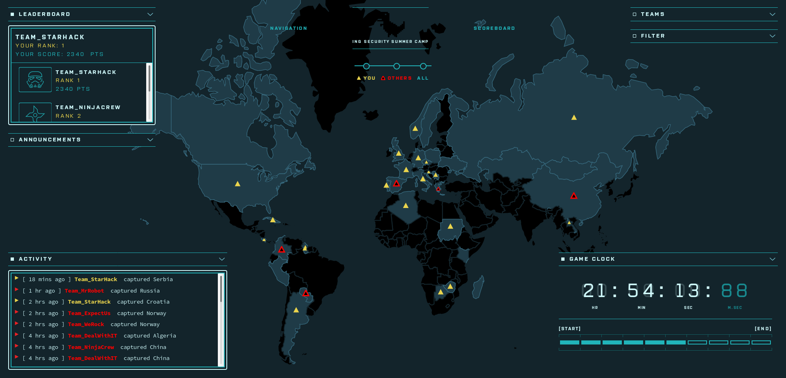
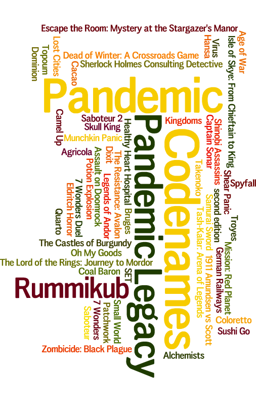
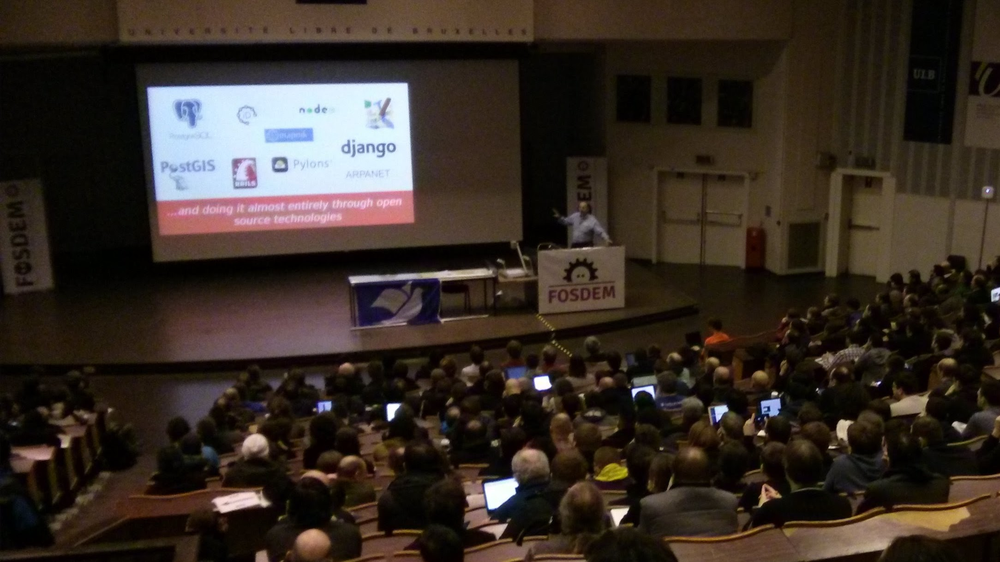
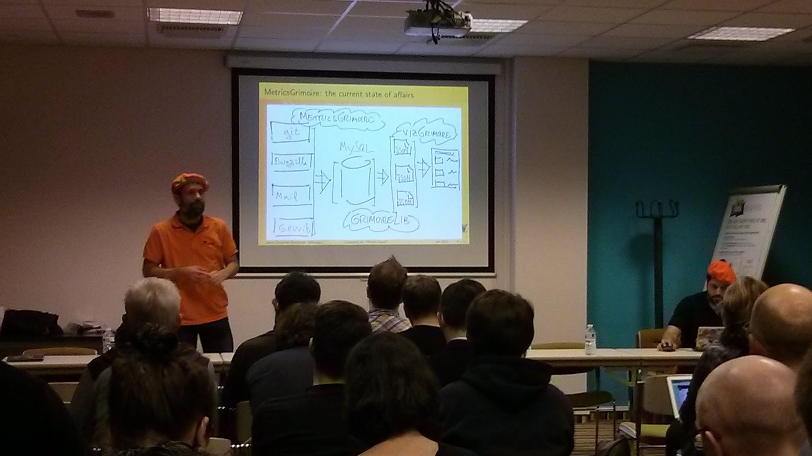
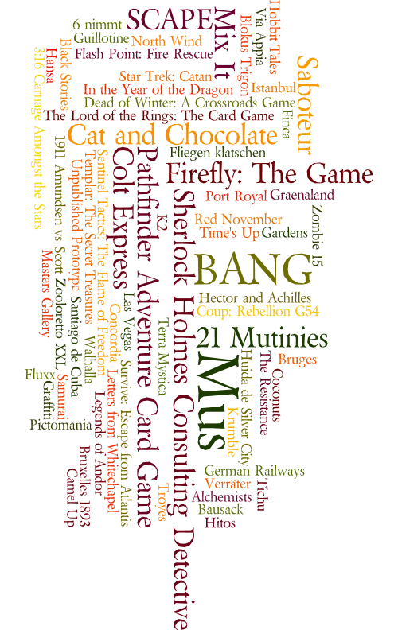
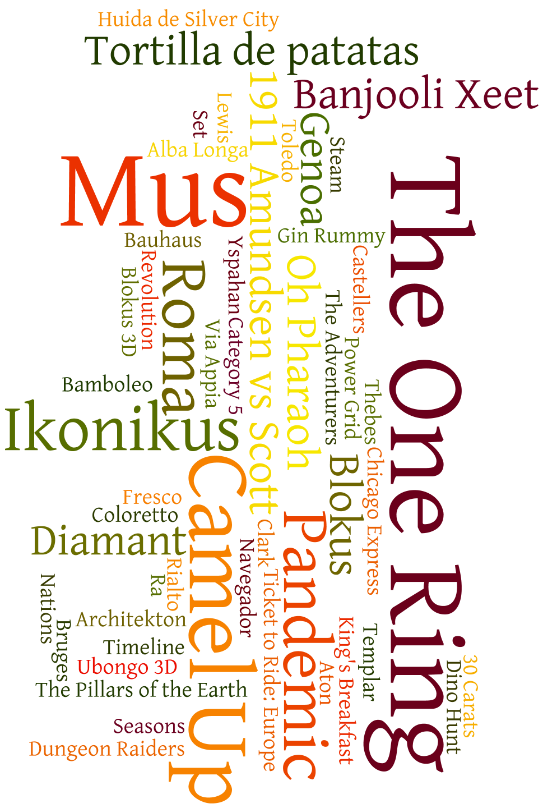
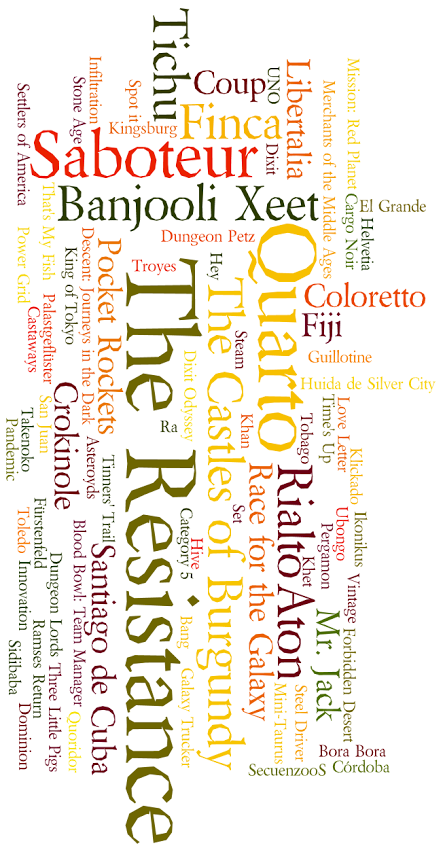
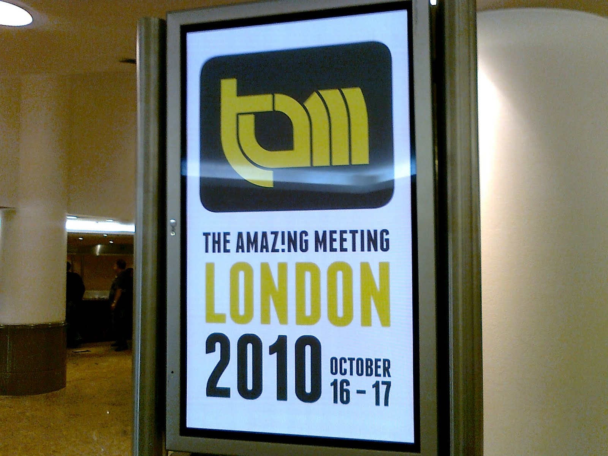

Tag: personal

Map status of the ING CTF competition with less than 22h left
Last week I had the huge pleasure to participate in a week-long Security Summer Camp organized by the Information Security department of ING Spain. The agenda was very promising and implied some theory and lots of practice, ending with an Escape the Room game and a 2,5 days long Capture The Flag competition. Several speakers from the Infosec Squad prepared talks and workshops about different topics, focusing on Ethical Hacking, secure development, server hardening or OSINT.
Our fourth stage started in Gästehaus Lauterbacher, a splendid guesthouse in Neumarkt am Wallersee. Quite off our route because we couldn't find anything affordable in Mondsee. We wanted a good place to rest after a hard day 3, and Lauterbacher was more than good. The place itself was nice and the owners were marvellous with us. I'll seriously consider returning to this place if I ever come back to the region.
And thus it began the most awaited stage.
After two days visiting splendid places with invaluable surprises, we finally decided to discard a short visit to Salzburg in order to spend more time on each stage of our trip. We wanted to take advantage of our rental car and Salzbug deserves to be visited more calmly (and you don't need a car to go there). For similar reasons, we also ruled out going to the Hohenwerfen Castle.
I think it was the right decision, because it allowed us to make the most of the remaining of our road trip.
views from the Mathemical Tower terrace in Kremsmünster Abbey
Source: My own pictures -
CC BY-NC-SA
For me, Kremsmünster Abbey was the most positive surprise of the entire trip. A priori it looked like yet another abbey, and our first hour there not only was confirming that suspicion but also made us feel somewhat deceived. We paid a considerable amount of money to find out that the ticket didn't include the visit of what we particularly wanted to see in there: The Tassilo Chalice, the Library and the Mathematical Tower. We could enter only the public areas and the inner gardens where they temporaly hosted a floral exhibition. The information was confusing, mostly in german only, and the variety of ticket options was the most complex that I've ever seen in a place like this.
Schallaburg Castle and garden
Source: My own pictures -
CC BY-NC-SA
A couple of weeks ago I had the immense pleasure of making a road trip through Austria following what they call the Romantikstraße, Romantic Road or Romantic Trail in English. Interestingly, ours was a singles trip initially planned for three friends but sadly in the end we were only two because at the last minute Roberto had to cancel. I shared this great adventure only with Agatha and it was great (as expected). I suppose that in the eyes of any innkeeper or bartender we were a happy couple celebrating something.

Como cada arranque de año toca revisar los datos sobre las partidas que he jugado durante el año anterior (enlace a los datos de 2015, 2014, 2013, 2012 y 2011). Vuelvo a insistir en la comparación con los años anteriores, y mantendré el apartado de análisis y retrospectiva, que quizá sea la parte más interesante.

Our FOSDEM Sunday ended being much like the day before. A large majority of the talks I attended were in the Legal and Policy Issues track.
After an interesting Friday (as I told you yesterday) our FOSDEM Saturday started early. I attended a couple of talks in the Free Java DevRoom, another couple about Open Source Design but surprisingly most of them were in the Legal and Policy Issues track.

As you may know if you are reading this, FOSDEM is a not to be missed event about Free and Open Source Software (FOSS). By far, it is the most important gathering about FOSS in the planet. It's an unbeatable opportunity to attend great talks and workshops, but also to hang around with amazing people and top professionals.


Como cada arranque de año (aunque esta vez lo hago muy tarde) toca revisar los datos sobre las partidas que he jugado durante el año anterior (enlace a los datos de 2013, 2012 y 2011). Vuelvo a insistir en la comparación con los años anteriores, y este año como bonus trataré de reforzar el apartado de análisis y retrospectiva.

Llega el momento de la entrada que publico cada año con datos sobre las partidas que he jugado durante el año (enlace a los datos de 2012 y 2011). Siendo el tercer año, cada vez es más útil e interesante la comparación con los años anteriores.
Dentro de tres días, el próximo Miércoles 30 de Enero, estaré en Ginebra para una visita que llevo mucho tiempo planeando: la Organización Europea para la Investigación Nuclear que todos conocemos por sus siglas en francés CERN (Conseil Européen pour la Recherche Nucléaire).
Tras una introducción para despistados (muy despistados) entraré al propósito de esta entrada, una guía rápida y fácil para visitar el CERN, dado que es mucho más sencillo y asequible de lo que la gente cree.
Aprovechando que acabo de realizar mi undécimo préstamo a través de Kiva vuelvo a hablaros un poco de este servicio. Hace ahora poco más de un año que os hablé de ello por primera vez, fue más o menos entonces cuando realicé mi primer préstamo a través de esta web. Luego han llegado 10 préstamos más, con los que llevo prestados exactamente 275 dólares (incluyendo todo lo que me han ido devolviendo) a gente que los necesita mucho más que yo.

Mañana, se puede decir que en cuestión de horas, salgo hacia Londres. Por tercera vez en menos de dos años aunque esta vez no es por motivos turísticos.
El motivo de este viaje es asistir a la TAM London 2010, un evento único y muy especial. TAM viene de ‘The Amaz!ng Meeting’, unas jornadas de eventos y conferencias organizadas por la JREF (James Randi Educational Foundation) habitualmente en Las Vegas aunque desde 2009 se vienen desdoblando aquí en Europa, en Londres hasta ahora.
Encontré la web de Kiva hace unos meses. En aquel momento me interesó mucho pero no me decidí y el tiempo y mi memoria enterraron la idea. Esta vez no podía pasar lo mismo.